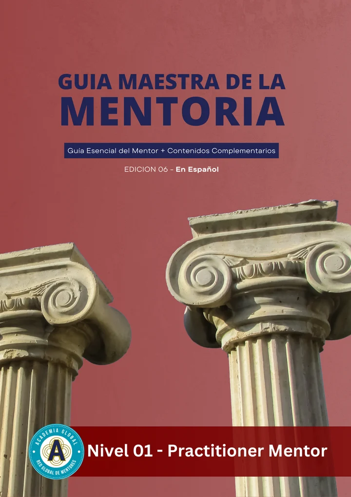
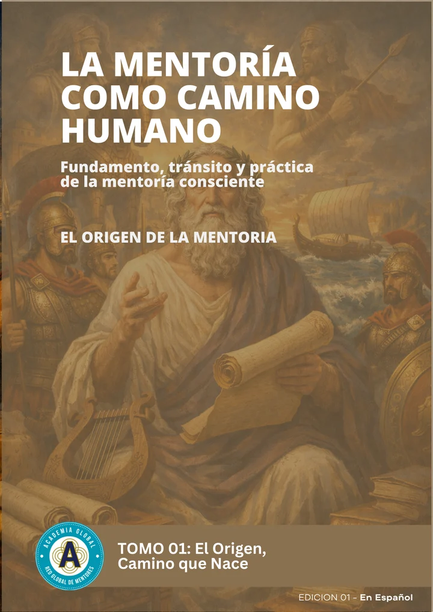
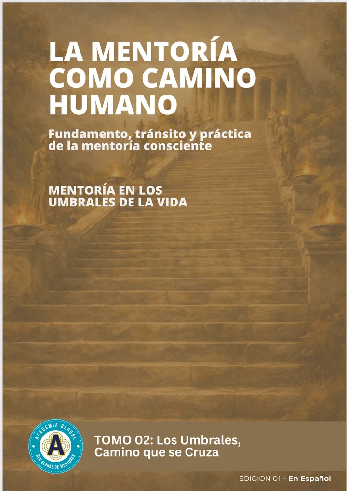
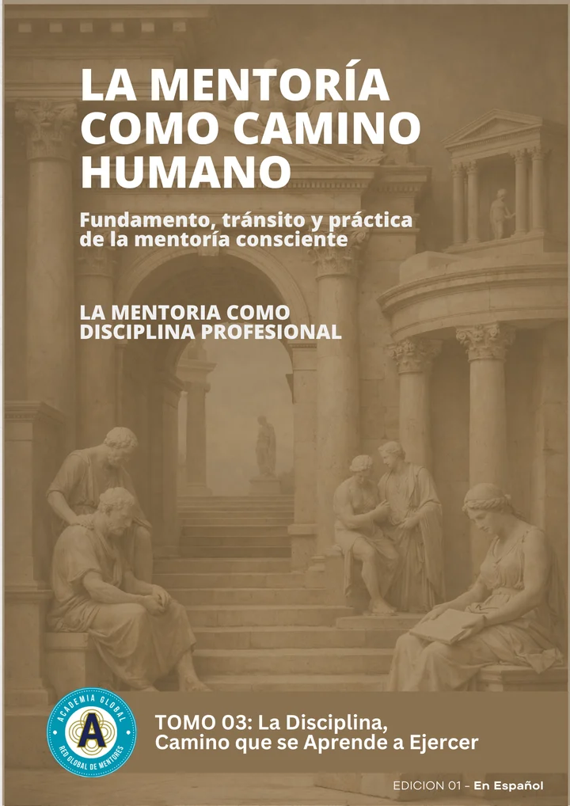
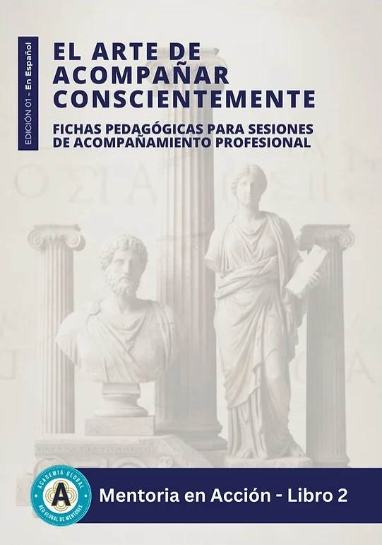
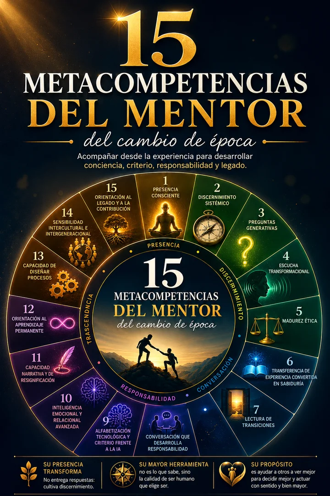

From intuition to professional practice: content from the RGM Global Academy and RGM Publishing, organised by where you are on your path.
Triad for professionals
Mentoring for human development professionals
Comprehensive Guide to Disciplines · Essential Guide · Professional Manual
An intensive programme for professionals in related disciplines who want to integrate mentoring with excellence and an international standard.
See the triad →


Manual for universities
Master Guide to Mentoring
Level 01 · Level 02 · Level 03
The international reference work for understanding and practising mentoring with rigour, ethics and a professional standard, in three levels: Foundations, Relational Dynamics, and Praxis and Standards.
See the manual →


Foundational triad
Mentoring as a human path
The origin · The thresholds · The discipline
Understand what mentoring is before trying to practise it: a conscious human experience, prior to any role, certification or method.
See the triad →


Functional triad
The art of accompanying consciously
Mentoring in Action series
For practising mentors: a training architecture that links judgement, action and reflection, the three inseparable dimensions of conscious practice.
See the triad →


Latest editions
Recommended reading
EPCM-RGM · Doctrinal Architecture · 15 Metacompetencies
Accompanying from experience to develop awareness, judgement, responsibility and legacy: the methodological foundation every expert mentor must master.
See the editions →Collection in development
Expert Mentor Manuals
Strategic guides with models, tools and practices for different niches: 12 specialisation manuals, four already published.
Supporting critical illnessProject managementCorporate management and leadershipContinuing education
Free for Active Members →